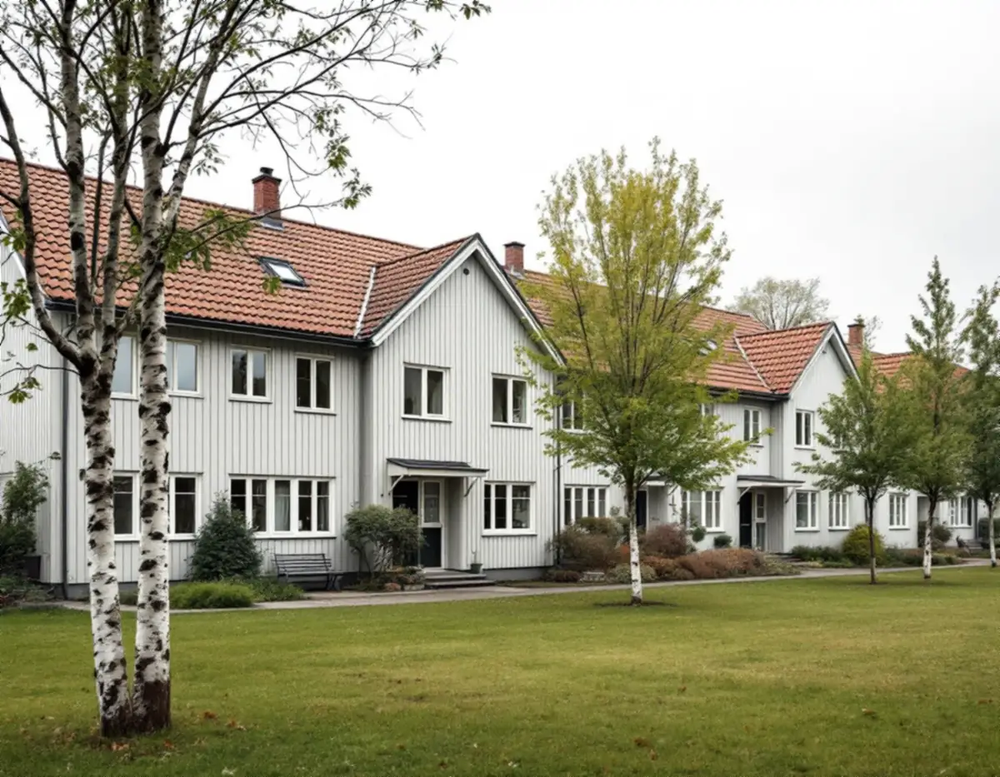
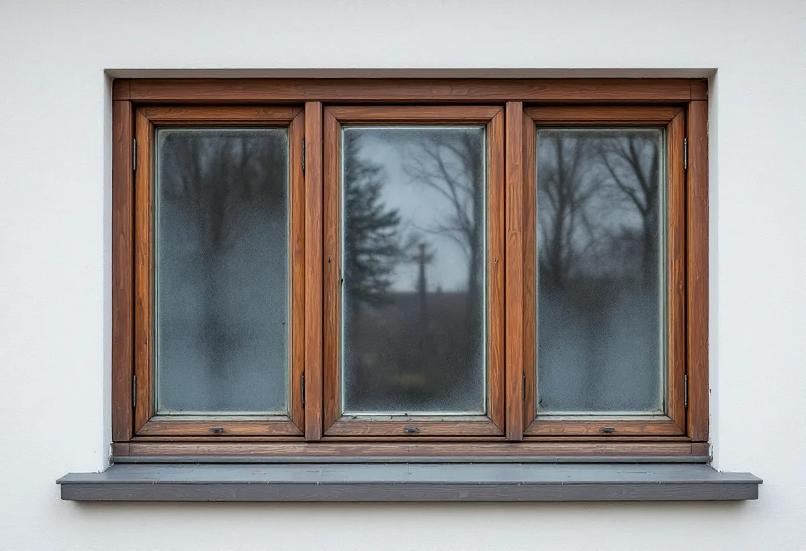

Platsbesök
Vi bedömer fönstren, tar reda på fönstertypen i området och kontrollerar fogar och kitt.
I Järfälla står arbetarvillor från Bolinders tid i Kallhäll inte långt från radhuslängor och kedjehus från 1950-, 60- och 70-talen. Fönstren säger mycket om när husen byggdes, och ett byte syns ofta i hela raden. Geal Entreprenad AB byter och renoverar fönster i Jakobsberg, Kallhäll, Viksjö, Barkarby och övriga Järfälla och lämnar ett skriftligt kostnadsförslag efter ett gratis platsbesök.

Järfällas kulturmiljöplan berättar att Bolinders lät bygga de första femton arbetarvillorna i Kallhäll 1907–1913, och att ytterligare sex tillkom under 1920-talet. Villorna låg på båda sidor om järnvägen och varje hus hade fyra eller fler lägenheter. Två av dem finns kvar: Basvillan, där flera förmän bodde, och Glasvillan, som fått sitt namn av de stora fönsterpartierna. Båda är klädda med locklistpanel och har i stort sett kvar sitt ursprungliga utseende.
Planen ger också ett exempel på motsatsen. Kallhälls gamla skola hade stora och höga småspröjsade fönster mot söder för att skolsalarna skulle få så mycket ljus som möjligt. Under 1950-talets senare del förenklades fasaden kraftigt: de spröjsade fönstren gjordes mindre och byttes mot perspektivfönster. Byggnaden har sedan rivits.
Exemplen visar att fönstren kan vara det som ger ett hus dess namn, och att ett byte kan förändra en byggnad mer än någon annan enskild åtgärd.

Flera av Järfällas småhusområden är byggda i grupper. Kulturmiljöplanen beskriver till exempel rad- och kedjehusen kring Skogsvägen och Toppvägen i Jakobsberg, som ger en god bild av det tidiga 1960-talets småhusbyggande och där flera olika byggnadsfirmor gav området ett varierat uttryck. Planen skriver att fasad- och takmaterial och färgsättning är viktiga att behålla där, och att lovplikten därför bör utökas vid en eventuell detaljplaneändring.
Järfälla kommun skriver att det inte krävs bygglov för fasadändringar på ett en- eller tvåbostadshus, och nämner nya fönster som exempel på en fasadändring. Undantaget är särskilt värdefulla byggnader och områden och detaljplaner med utökad lovplikt. Lovfria fasadändringar ska ändå stämma överens med detaljplanen eller vara en liten avvikelse som inte motverkar planens syfte, och de ska utföras varsamt.
I en radhuslänga där alla hus har samma fönster blir ett hus med annan indelning eller kulör tydligt. Vi tar därför reda på vilken fönstertyp längan hade från början och föreslår fönster som passar in. Den som vill vara säker kan söka frivilligt bygglov.
Boverket nämner en typ av fönster som ofta behöver bytas: treglasfönster från 1970-talet där glaskassetten har förlorat sin funktion och där monteringen i instickskarmar ger betydande energiförluster. Ett byte kan enligt Boverket också återställa utseendet på en byggnad som har förvanskats.
Innan gamla fönster tas ur bör man enligt Boverket undersöka om fogmassorna innehåller PCB eller asbest, som är saneringspliktiga, och förbereda rätt sanering och avfallshantering. Även kitt kan innehålla asbest och ska då hanteras enligt arbetsmiljöreglerna. För hus från 1950-, 60- och 70-talen är det en fråga som behöver ställas tidigt.
Fönster kan bytas året runt. Boverket nämner fönstertält vid kyla och råder att byta stegvis på vintern så att huset inte kyls ner. Ska fasaden kring fönstren målas om samtidigt, läs mer under målare i Järfälla.
Boverkets checklista för fönsterbyten handlar inte bara om energi. Den råder att bestämma vilken säkerhetsklassning fönster och dörrar ska ha, eftersom det är en viktig del av inbrottsskyddet, och påpekar att äldre fönster kan behöva förbättras eftersom de inte följer dagens tekniska standarder.
Har huset brandklassade fönster ska den nya lösningen ha minst samma klass. Boverket råder också att tänka igenom hur huset ska utrymmas vid brand, eftersom tekniska detaljer kan göra det lättare eller svårare att ta sig ut genom ett fönster.
Under själva bytet kan ett fönsterhål behöva stå öppet en tid i väntan på det nya fönstret. Boverket föreslår att man planerar inbrottsskyddet även för den tiden. Vi byter därför fönster i den takt som gör att huset kan stängas varje kväll.
Vi bedömer fönstren, tar reda på fönstertypen i området och kontrollerar fogar och kitt.
Vi kontrollerar om detaljplanen eller områdets värde påverkar vilket fönster som får sättas in.
Indelning, kulör, glas, säkerhetsklass och eventuell brandklass bestäms.
Fönster, montage, sanering av fogmassor och foder redovisas var för sig.
Fönstren byts i den takt som gör att huset kan stängas och hållas varmt.
Vi kontrollerar funktion och tätning och går igenom fönstren med dig.
Skatteverket räknar det som rotarbete i ett småhus att reparera eller byta ut fönster, montera isolerglas och bullerglas och byta fönsterbleck. Avdraget är 30 procent av arbetskostnaden, högst 50 000 kr per person och år och högst 75 000 kr tillsammans med rutavdrag.
Du ska äga bostaden när arbetet utförs. Geal drar avdraget direkt på fakturan.
Antal och storlek på fönstren, om fönstertypen måste anpassas till resten av radhuslängan, om fogmassor eller kitt behöver saneras, vilken säkerhets- och brandklass som krävs och hur mycket foder och bleck som ska göras om. Efter ett gratis platsbesök får du ett skriftligt kostnadsförslag.
Byta eller renovera fönster.
Fönsterbyte i Stockholm →Takbyte, takbesiktning och plåtarbeten.
Takläggare i Järfälla →Jakobsberg, Viksjö och Kallhäll.
Takrenovering i Järfälla →Planbesked, extra bostad och ansvar.
Byggföretag i Järfälla →Underhållsmålning i rätt tid.
Fasadmålning i Järfälla →Kedjehus, sekelskiftesvillor och parstuga i Stäket.
Fasadrenovering i Järfälla →Radhus, kedjehus och souterränghus.
Badrumsrenovering i Järfälla →Bottenstycken, bleck och vita omfattningar.
Fönsterrenovering i Järfälla →Kedjehus, egnahem och gamla golvskikt.
Golvläggare i Järfälla →Slipa och behandla trappan i huset.
Golvslipning i Järfälla →Kedjehus, radhus och souterräng.
Köksrenovering i Järfälla →Putsade radhus, kedjehus och villor i Järfälla.
Målare i Järfälla →Stuprör, skärmtak och plåttak i Järfälla.
Plåtslagare i Järfälla →Förgårdar, förråd och ytterdörrar.
Snickare i Järfälla →Lovfritt takbyte och papperen du sparar.
Takbyte i Järfälla →Ny tapet på skivväggar i radhus.
Tapetsering i Järfälla →